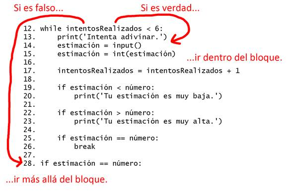

|
|
Capítulo 4 |
Adivina el Número |

Temas Tratados En Este Capítulo:
· Sentencias import
· Módulos
· Sentencias while
· Condiciones
· Bloques
· Booleanos
· Operadores de comparación
· La diferencia entre = y ==
· Sentencias if
· La palabra reservada break
· Las funciones str(), int() y float()
· La función random.randint()
En este capítulo crearás el juego “Adivina el Número”. La computadora pensará un número aleatorio entre 1 y 20, y te pedirá que intentes adivinarlo. La computadora te dirá si cada intento es muy alto o muy bajo. Tú ganas si adivinas el número en seis intentos o menos.
Este es un buen juego para codificar ya que usa números aleatorios y bucles, y recibe entradas del usuario en un programa corto. Aprenderás cómo convertir valores a diferentes tipos de datos, y por qué es necesario hacer esto. Dado que este programa es un juego, nos referiremos al usuario como el jugador. Pero llamarlo “usuario” también sería correcto.
Muestra de ejecución de “Adivina el Número”
Así es como el programa se muestra al jugador al ejecutarse. El texto que el jugador ingresa está en negrita.
¡Hola! ¿Cómo te llamas?
Alberto
Bueno, Alberto, estoy pensando en un número entre 1 y 20.
Intenta adivinar.
10
Tu estimación es muy alta.
Intenta adivinar.
2
Tu estimación es muy baja.
Intenta adivinar.
4
¡Buen trabajo, Albert! ¡Has adivinado mi número en 3 intentos!
Código Fuente de Adivina el Número
Abre una nueva ventana del editor de archivos haciendo clic en File (Archivo) ► New Window (Nueva Ventana). En la ventana vacía que aparece, escribe el código fuente y guárdalo como adivinaElNúmero.py. Luego ejecuta el programa pulsando F5. Cuando escribas este código en el editor de archivos, asegúrate de prestar atención a la cantidad de espacios delante de algunas de las líneas. Algunas líneas están indentadas por cuatro u ocho espacios.
¡NOTA IMPORTANTE! Los programas de este libro sólo podrán ejecutarse sobre Python 3, no Python 2. Al iniciar la ventana IDLE, dirá algo como “Python 3.4.2” en la parte superior. Si tienes Python 2 instalado, es posible instalar también Python 3 a la vez. Para descargar Python 3, dirígete a https://python.org/download/.
Si obtienes errores luego de copiar este código, compáralo con el código del libro usando la herramienta diff online en http://invpy.com/diff/adivinaElNúmero.
adivinaElNúmero.py
1. # Este es el juego de adivinar el número.
2. import random
3.
4. intentosRealizados = 0
5.
6. print('¡Hola! ¿Cómo te llamas?')
7. miNombre = input()
8.
9. número = random.randint(1, 20)
10. print('Bueno, ' + miNombre + ', estoy pensando en un número entre 1 y 20.')
11.
12. while intentosRealizados < 6:
13. print('Intenta adivinar.') # Hay cuatro espacios delante de print.
14. estimación = input()
15. estimación = int(estimación)
16.
17. intentosRealizados = intentosRealizados + 1
18.
19. if estimación < número:
20. print('Tu estimación es muy baja.') # Hay ocho espacios delante de print.
21.
22. if estimación > número:
23. print('Tu estimación es muy alta.')
24.
25. if estimación == número:
26. break
27.
28. if estimación == número:
29. intentosRealizados = str(intentosRealizados)
30. print('¡Buen trabajo, ' + miNombre + '! ¡Has adivinado mi número en ' + intentosRealizados + ' intentos!')
31.
32. if estimación != número:
33. número = str(número)
34. print('Pues no. El número que estaba pensando era ' + número)
Sentencias import
1. # Este es el juego de adivinar el número.
2. import random
La primera línea es un comentario. Recuerda que Python ignorará todo lo que esté precedido por el signo #. Esto sólo nos indica qué es lo que hace el programa.
La segunda línea es una sentencia import. Recuerda, las sentencias son instrucciones que realizan alguna acción, pero no son evaluadas a un valor como las expresiones. Ya has visto sentencias antes: las sentencias de asignación almacenan un valor en una variable.
Aunque Python incluye muchas funciones integradas, algunas funciones existen en programas separados llamados módulos. Puedes usar estas funciones importando sus módulos en tu programa con una sentencia import.
La línea 2 importa el módulo llamado random de modo que el programa pueda llamar a random.randint(). Esta función generará un número aleatorio para que el usuario adivine.
4. intentosRealizados = 0
La línea 4 crea una nueva variable llamada intentosRealizados. Guardaremos en esta variable el número de veces que el jugador ha intentado adivinar el número. Ya que el jugador no ha realizado ningún intento a esta altura del programa, guardaremos aquí el entero 0.
6. print('¡Hola! ¿Cómo te llamas?')
7. miNombre = input()
Las líneas 6 y 7 son iguales a las líneas en el programa Hola Mundo que viste en el Capítulo 3. Los programadores a menudo reutilizan código de sus otros programas para ahorrarse trabajo.
La línea 6 es una llamada a la función print(). Recuerda que una función es como un mini-programa dentro de tu programa. Cuando tu programa llama a una función, ejecuta este mini-programa. El código dentro de la función print() muestra en la pantalla la cadena que ha recibido como argumento.
La línea 7 permite al usuario escribir su nombre y lo almacena en la variable miNombre. (Recuerda, la cadena podría no ser realmente el nombre del jugador. Es simplemente cualquier cadena que el jugador haya introducido. Las computadoras son tontas, y sólo siguen sus instrucciones sin importarles nada más.)
La Función random.randint()
9. número = random.randint(1, 20)
La línea 9 llama a una nueva función denominada randint() y guarda el valor que ésta devuelve en la variable número. Recuerda, las llamadas a funciones pueden ser parte de expresiones, ya que son evaluadas a un valor.
La función randint() es parte del módulo random, por lo que debes colocar random. delante de ella (¡no olvides colocar el punto!) para decirle a Python que la función randint() está en el módulo random.
La función randint() devolverá un entero aleatorio en el intervalo comprendido (incluidos los bordes) entre los dos argumentos enteros que le pases. La línea 9 pasa 1 y 20 separados por una coma y entre los paréntesis que siguen al nombre de la función. El entero aleatorio devuelto por randint() es almacenado en una variable llamada número; este es el número secreto que el jugador intentará adivinar.
Sólo por un momento, vuelve a la consola interactiva y escribe import random para importar el módulo random. Luego escribe random.randint(1, 20) para ver a qué se evalúa la llamada a la función. Devolverá un entero entre 1 y 20. Repite el código nuevamente y la llamada a la función probablemente devolverá un entero diferente. La función randint() devuelve un entero aleatorio cada vez, de la misma forma en que tirando un dado obtendrías un número aleatorio cada vez:
>>> import random
>>> random.randint(1, 20)
12
>>> random.randint(1, 20)
18
>>> random.randint(1, 20)
3
>>> random.randint(1, 20)
18
>>> random.randint(1, 20)
7
Usa la función randint() cuando quieras agregar aleatoriedad a tus juegos. Y vas a usar aleatoriedad en muchos juegos. (Piensa en la cantidad de juegos de mesa que utilizan dados.)
También puedes probar diferentes intervalos de números cambiando los argumentos. Por ejemplo, escribe random.randint(1, 4) para obtener sólo enteros entre 1 y 4 (incluyendo 1 y 4). O prueba random.randint(1000, 2000) para obtener enteros entre 1000 y 2000.
Por ejemplo, escribe lo siguiente en la consola interactiva. Los resultados que obtienes cuando llamas a la función random.randint() serán seguramente diferentes (después de todo es aleatorio).
>>> random.randint(1, 4)
3
>>> random.randint(1000, 2000)
1294
Puedes cambiar ligeramente el código fuente del juego para hacer que el programa se comporte de forma diferente. Prueba cambiar las líneas 9 y 10 de:
9. número = random.randint(1, 20)
10. print('Bueno, ' + miNombre + ', estoy pensando en un número entre 1 y 20.')
…a lo siguiente:
9. número = random.randint(1, 100)
10. print('Bueno, ' + miNombre + ', estoy pensando en un número entre 1 y 100.')
Y ahora la computadora pensará en un entero comprendido entre 1 y 100 en lugar de entre 1 y 20. Cambiar la línea 9 cambiará el intervalo del número aleatorio, pero recuerda cambiar también la línea 10 para que el juego le diga al jugador el nuevo rango en lugar del viejo.
Recibiendo al Jugador
10. print('Bueno, ' + miNombre + ', estoy pensando en un número entre 1 y 20.')
En la línea 10 la función print() recibe al jugador llamándolo por su nombre, y le dice que la computadora está pensando un número aleatorio.
Puede parecer que hay más de un argumento cadena en la línea 10, pero observa la línea con cuidado. El signo suma concatena las tres cadenas de modo que son evaluadas a una única cadena. Y esa única cadena es el argumento que se pasa a la función print(). Si miras detenidamente, verás que las comas están dentro de las comillas, por lo que son parte de las cadenas y no un separador.
Bucles
12. while intentosRealizados < 6:
La línea 12 es una sentencia while (mientras), que indica el comienzo de un bucle while. Los bucles te permiten ejecuta código una y otra vez. Sin embargo, necesitas aprender algunos otros conceptos antes de aprender acerca de los bucles. Estos conceptos son bloques, booleanos, operadores de comparación, condiciones, y la sentencia while.
Bloques
Varias líneas de código pueden ser agrupadas en un bloque. Un bloque consiste en líneas de código que comparten mínima indentación posible. Puedes ver dónde comienza y termina un bloque de código mirando el número de espacios antes de las líneas. Esto se llama la indentación de la línea.
Un bloque comienza cuando la indentación de una línea se incrementa (usualmente en cuatro espacios). Cualquier línea subsiguiente que también esté indentada por cuatro espacios es parte del bloque. El bloque termina cuando hay una línea de código con la misma indentación que antes de empezar el bloque. Esto significa que pueden existir bloques dentro de otros bloques. La Figura 4-1 es un diagrama de código con los bloques delineados y numerados. Los espacios son cuadrados negros para que sean más fáciles de contar.
En la Figura 4-1, la línea 12 no tiene indentación y no se encuentra dentro de ningún bloque. La línea 13 tiene una indentación de cuatro espacios. Como esta indentación es mayor que la indentación de la línea anterior, ha comenzado un nuevo bloque. Este bloque tiene la etiqueta (1) en la Figura 4-1. Este bloque continuará hasta una línea sin espacios (la indentación original antes de que comenzara el bloque). Las líneas vacías son ignoradas.
La línea 20 tiene una indentación de ocho espacios. Ocho espacios es más que cuatro espacios, lo que comienza un nuevo bloque. Este bloque se señala con (2) en la Figura 4-1. Este bloque se encuentra dentro de otro bloque.

Figura 4-1: Bloques y su indentación. Los puntos negros representan espacios.
La línea 22 sólo tiene cuatro espacios. Al ver que la indentación se ha reducido, sabes que el bloque ha terminado. La línea 20 es la única línea del bloque. La línea 22 está en el mismo bloque que las otras líneas con cuatro espacios.
La línea 23 incrementa la indentación a ocho espacios, de modo que otra vez comienza un nuevo bloque. Es el que tiene la etiqueta (3) en la Figura 4-1.
Para recapitular, la línea 12 no están en ningún bloque. Las líneas 13 a 23 pertenecen al mismo bloque (marcado como bloque 1). La línea 20 está en un bloque dentro de un bloque marcado con (2). Y la línea 23 es la única línea en otro bloque dentro de un bloque marcado con (3).
El Tipo de Datos Booleano
El tipo de datos Booleano tiene sólo dos valores: True (Verdadero) o False (Falso). Estos valores deben escribirse con “T” y “F” mayúsculas. El resto del nombre del valor debe estar en minúscula. Usarás valores Booleanos (llamados bools por brevedad) con operadores de comparación para formar condiciones. (Las condiciones serán explicadas más adelante.)
Por ejemplo:
>>> spam = True
>>> eggs = False
Los tipos de datos que han sido introducidos hasta ahora son enteros, floats, cadenas, y ahora bools.
Operadores de Comparación
La línea 12 tiene una sentencia while:
12. while intentosRealizados < 6:
La expresión que sigue a la palabra reservada while (la parte intentosRealizados < 6) contiene dos valores (el valor en la variable intentosRealizados, y el valor entero 6) conectados por un operador (el símbolo <, llamado el símbolo “menor que”). El símbolo < se llama un operador de comparación.
Los operadores de comparación comparan dos valores y se evalúan a un valor Booleano True o False. En la Tabla 4-1 se muestra una lista de todos los operadores de comparación.
Table 4-1: Operadores de comparación.
|
Signo del Operador |
Nombre del Operador |
|
< |
Menor que |
|
> |
Mayor que |
|
<= |
Menor o igual a |
|
>= |
Mayor o igual a |
|
== |
Igual a |
|
!= |
Diferente a |
Ya has leído acerca de los operadores matemáticos +, -, *, y /. Como cualquier operador, los operadores de comparación se combinan con valores ara formar expresiones tales como intentosRealizados < 6.
Condiciones
Una condición es una expresión que combina dos valores con un operador de comparación (tal como < o >) y se evalúa a un valor Booleano. Una condición es sólo otro nombre para una expresión que se evalúa a True o False. Las condiciones se usan en sentencias while (y en algunas otras situaciones, explicadas más adelante.)
Por ejemplo, la condición intentosRealizados < 6 pregunta, “¿es el valor almacenado en intentosRealizados menor que el número 6?” Si es así, entonces la condición se evalúa a True (Verdadero). En caso contrario, la condición se evalúa a False (Falso).
En el caso del programa “Adivina el Número”, en la línea 4 has almacenado el valor 0 en intentosRealizados. Como 0 es menor que 6, esta condición se evalúa al valor Booleano True. La evaluación ocurre así:
intentosRealizados < 6
▼
0 < 6
▼
True
Experimentando con Booleans, Operadores de Comparación y Condiciones
Escribe las siguientes expresiones en la consola interactiva para ver sus resultados Booleanos:
>>> 0 < 6
True
>>> 6 < 0
False
>>> 50 < 10
False
>>> 10 < 11
True
>>> 10 < 10
False
La condición 0 < 6 devuelve el valor Booleano True porque el número 0 es menor que el número 6. Pero como 6 no es menor que 0, la condición 6 < 0 se evalúa a False. 50 no es menor que 10, luego 50 < 10 es False. 10 es menor que 11, entonces 10 < 11 es True.
Observa que 10 < 10 se evalúa a False porque el número 10 no es más pequeño que el número 10. Son exactamente del mismo tamaño. Si Alicia fuera igual de alta que Berto, no dirías que Alicia es más alta que Berto o que Alicia más baja que Berto. Ambas afirmaciones serían falsas.
Ahora prueba introducir estas expresiones en la consola interactiva:
>>> 10 == 10
True
>>> 10 == 11
False
>>> 11 == 10
False
>>> 10 != 10
False
>>> 10 != 11
True
>>> 'Hola' == 'Hola'
True
>>> 'Hola' == 'Adios'
False
>>> 'Hola' == 'HOLA'
False
>>> 'Adios' != 'Hola'
True
La Diferencia Entre = y ==
Intenta no confundir el operador asignación (=) y el operador de comparación “igual a” (==). El signo igual (=) se usa en sentencias de asignación para almacenar un valor en una variable, mientras que el signo igual-igual (==) se usa en expresiones para ver si dos valores son iguales. Es fácil usar uno accidentalmente cuando quieres usar el otro.
Sólo recuerda que el operador de comparación “igual a” (==) está compuesto por dos caracteres, igual que el operador de comparación “diferente a” (!=) que también está compuesto por dos caracteres.
Cadenas y valores enteros no pueden ser iguales. Por ejemplo, prueba escribiendo lo siguiente en la consola interactiva:
>>> 42 == 'Hola'
False
>>> 42 != '42'
True
Creabdo Bucles con sentencias while
La sentencia while (mientras) indica el comienzo de un bucle. Los bucles pueden ejecutar el mismo código repetidas veces. Cuando la ejecución llega hasta una sentencia while, evalúa la condición junto a la palabra reservada while. Si la condición se evalúa a True, la ejecución se mueve dentro del bloque while. (En tu programa, el bloque while comienza en la línea 13.) Si la condición se evalúa a False, la ejecución se mueve hasta debajo del bloque while. (En “Adivina el Número”, la primera línea luego del bloque while es la línea 28.)
Una sentencia while siempre incluye dos punos (el signo :) después de la condición.
12. while intentosRealizados < 6:

Figura 4-2: La condición del bucle while.
La Figura 4-2 muestra como transcurre la ejecución dependiendo de la condición. Si la condición se evalúa a True (lo cual hace la primera vez, porque el valor de intentosRealizados es 0), la ejecución entrará al bloque while en la línea 13 y continuará moviéndose hacia abajo. Una vez que el programa llegue al final del bloque while, en lugar de ir hacia abajo hasta la siguiente línea, la ejecución vuelve atrás hasta la línea de la sentencia while (línea 12) y reevalúa la condición. Como antes, si la condición es True la ejecución vuelve a entrar al bloque while. Cada vez que la ejecución recorre el bucle se llama una iteración.
Así es como funciona el bucle. Mientras que la condición sea True, el programa sigue ejecutando el código dentro del bloque while en forma repetida hasta la primera vez que la condición sea False. Piensa en la sentencia while como decir, “mientras esta condición sea verdadera, sigue iterando a través del código en este bloque”.
El Jugador Adivina
13. print('Intenta adivinar.') # Hay cuatro espacios delante de print.
14. estimación = input()
Las líneas 13 a 17 piden al jugador que adivine cuál es el númeo secreto y le permiten formular su intento. Este número se almacena en una variable llamada estimación.
Conversión de Cadenas a Enteros con la función int(), float(), str(), bool()
15. estimación = int(estimación)
En la línea 15, llamas a una función llamada int(). La función int() toma un argumento y devuelve un valor entero de ese argumento. Prueba escribir lo siguiente en la consola interactiva:
>>> int('42')
42
>>> 3 + int('2')
5
La llamada a int('42') devolverá el valor entero 42. La llamada int(42) hará lo mismo (a pesar de que no tiene mucho sentido obtener la forma de valor entero de un valor que ya es entero). Sin embargo, aunque la función int() acepta cadenas, no puedes pasarle cualquier cadena. Pasarle 'cuarenta-y-dos' a int() resultará en un error. La cadena que recibe int() debe estar compuesta por números.
>>> int('cuarenta-y-dos')
Traceback (most recent call last):
File "<pyshell#5>", line 1, in <module>
int('cuarenta-y-dos')
ValueError: invalid literal for int() with base 10: 'cuarenta-y-dos'
La línea 3 + int('2') muestra una expresión que usa el valor de retorno de int() como parte de una expresión. Se evalúa al valor entero 5:
3 + int('2')
▼
3 + 2
▼
5
Recuerda, la función input() devuelve una cadena de texto que el jugador ha escrito. Si el jugador escribe 5, la función input() devolverá el valor de cadena '5', no el valor entero 5. Python no puede usar los operadores de comparación < y > para comparar una cadena y un valor entero:
>>> 4 < '5'
Traceback (most recent call last):
File "<pyshell#0>", line 1, in <module>
4 < '5'
TypeError: unorderable types: int() < str()
14. estimación = input()
15. estimación = int(estimación)
En la línea 14 la variable estimación contenía originalmente el valor de cadena ingresado por el jugador. La línea 15 sobrescribe el valor de cadena en estimación con el valor entero devuelto por int(). Esto permite al código más adelante en el programa comparar si estimación es mayor, menor o igual al número secreto en la variable número.
Una última cosa: La llamada int(estimación) no cambia el valor de la variable estimación. El código int(estimación) es una expresión que se evalúa a la forma de valor entero de la cadena guardada en la variable estimación. Lo que cambia estimación es la sentencia de asignación: estimación = int(estimación)
El float(), str(), y bool() funciona de manera similar se volverá float, str, y las versiones de Boole de los argumentos que se pasan a ellos:
>>> float('42')
42.0
>>> float(42)
42.0
>>> str(42)
'42'
>>> str(42.0)
'42.0'
>>> str(False)
'False'
>>> bool('')
False
>>> bool('any nonempty string')
True
Incrementando las Variables
17. intentosRealizados = intentosRealizados + 1
Una vez que el jugador ha realizado un intento, el número de intentos debería incrementarse en uno.
En la primera iteración del bucle, intentosRealizados tiene el valor 0. Python tomará este valor y le sumará 1. 0 + 1 se evalúa a 1, el cual se almacena como nuevo valor de intentosRealizados. Piensa en la línea 17 como diciendo, “la variable intentosRealizados debería ser uno más que lo que es ahora”.
Sumarle uno al valor entero o float de una variable es lo que se llama incrementar la variable. Restarle uno al valor entero o float de una variable es decrementar la variable.
Sentencias if
19. if estimación < número:
20. print('Tu estimación es muy baja.') # Hay ocho espacios delante de print.
La línea 19 es una sentencia if. La ejecución correrá el código en el siguiente bloque si la condición de la sentencia if se evalúa a True. Si la condición es False, entonces el código en el bloque if se omite. Mediante el uso de sentencias if, puedes hacer que el programa sólo ejecute ciertas partes del código cuando tú quieras.
La sentencia if funciona casi igual que una sentencia while. Pero a diferencia del bloque while, la ejecución no vuelve atrás hasta la sentencia if cuando termina de ejecutarse el bloque if. Simplemente continúa en la línea siguiente. En otras palabras, las sentencias if no generan un bucle. Mira la Figura 4-3 para ver una comparación de las dos sentencias.

Figura 4-3: Sentencias if y while.
22. if estimación > número:
23. print('Tu estimación es muy alta.')
La línea 22 comprueba si la estimación del jugador es mayor que el entero aleatorio. Si esta condición es True, entonces la llamada a la función print() indica al jugador que su estimación es demasiado alta.
Abandonando los Bucles Anticipadamente con la sentencia break
25. if estimación == número:
26. break
La sentencia if en la línea 25 comprueba si la estimación es igual al entero aleatorio. Si lo es, el programa ejecuta la sentencia break de la línea 26.
Una sentencia break indica a la ejecución que salga inmediatamente del bucle while y se mueva a la primera línea a continuación del mismo. (Las sentencias break no se molestan en volver a revisar la condición del bucle while, sólo salen del bucle instantaneamente.)
La sentencia break es simplemente la palabra reservada break en sí misma, sin condición o dos puntos.
Si el jugador adivinó el número no es igual al número entero aleatorio, la ejecución alcanza la parte inferior del bloque while. Esto significa se repetirá la ejecución de nuevo a la parte superior y vuelva a comprobar el estado de la línea 12 (intentosRealizados < 6). Recuerdo que después de los intentosRealizados = intentosRealizados + 1 línea de código se ejecuta, el nuevo valor de intentosRealizados es 1. Porque 1 <6 es cierto que la ejecución entra en el bucle de nuevo.
Si el jugador continúa realizando intentos demasiado altos o bajos, el valor de intentosRealizados cambiará a 2, luego 3, luego 4, luego 5, luego 6. Cuando intentosRealizados tiene almacenado el número 6, la condición de la sentencia while es False, dado que 6 no es menor que 6. Como la condición de la sentencia while es False, la ejecución se mueve a la primera línea después del bloque while, línea 28.
Comprobar si el Jugador ha Ganado
28. if estimación == número:
La línea 28 no tiene indentación, lo que significa que el bloque while ha terminado y esta es la primera línea luego del mismo. La ejecución ha abandonado el bloque while, sea porque la condición de la sentencia while era False (cuando el jugador se quedó sin intentos) o porque se ejecutó la sentencia break (cuando el jugador adivina el número correctamente).
La línea 28 comprueba a ver si el jugador ha adivinado correctamente. Si es así, la ejecución entra al bloque if de la línea 29.
29. intentosRealizados = str(intentosRealizados)
30. print('¡Buen trabajo, ' + miNombre + '! ¡Has adivinado mi número en ' + intentosRealizados + ' intentos!')
Las líneas 29 y 30 sólo se ejecutan si la condición en la sentencia if de la línea 28 es True (es decir, si el jugador ha adivinado correctamente el número de la computadora).
La línea 29 llama a la nueva función str(), que devuelve la forma cadena de intentosRealizados. Este código obtiene la forma cadena del entero en intentosRealizados ya que sólo cadenas pueden ser concatenadas con otras cadenas.
Comprobar si el Jugador ha Perdido
32. if estimación != número:
La línea 32 usa el operador comparación != para comprobar si el último intento del jugador no es igual al número secreto. Si esta condición se evalúa a True, la ejecución se mueve dentro del bloque if de la línea 33.
Las líneas 33 y 34 están dentro del bloque if, y sólo se ejecutan si la condición de la línea 32 es True.
33. número = str(número)
34. print('Pues no. El número que estaba pensando era ' + número)
En este bloque, el programa indica al jugador cuál era el número secreto que no ha podido adivinar correctamente. Esto requiere concatenar cadenas, pero número almacena un valor entero. La línea 33 reemplazará número con una forma cadena, de modo que pueda ser concatenada con la cadena 'Pues no. El número que estaba pensando era ' de la línea 34.
En este punto, la ejecución ha alcanzado el final del código, y el programa termina. ¡Felicitaciones! ¡Acabas de programar tu primer juego de verdad!
Puedes cambiar la dificultad del juego modificando el número de intentos que el jugador recibe. Para dar al jugador sólo cuatro intentos, cambia esta línea::
12. while intentosRealizados < 6:
...por esta otra:
12. while intentosRealizados < 4:
El código más adelante en el bloque while incrementa la variable intentosRealizados en 1 en cada iteración. Al imponer la condición intentosRealizados < 4, te aseguras de que el código dentro del bucle sólo se ejecuta cuatro veces en lugar de seis. Esto hace al juego mucho más difícil. Para hacer el juego más fácil, cambia la condición a intentosRealizados < 8 o intentosRealizados < 10. Esto permitirá que el bucle se ejecute algunas veces más y acepte más intentos del jugador.
Sentencias de Control de Flujo
En capítulos anteriores, la ejecución del programa comenzaba por la instrucción de más arriba e iba directo hacia abajo, ejecutando cada instrucción en orden. Pero con las sentencias while, if, else, y break, puedes hacer que la ejecución repita u omita instrucciones basándose en condiciones. Este tipo de sentencia se llama sentencia de control de flujo, ya que modifican el “flujo” de la ejecución a medida que esta se desplaza por tu programa.
Resumen
Si alguien te preguntase “¿Qué es exactamente programar de todos modos?”, ¿qué podrías decirle? Programar es simplemente la acción de escribir código para programas, es decir, crear programas que puedan ser ejecutados por una computadora.
“Pero ¿qué es exactamente un programa?” Cuando ves a alguien usando un programa de computadora (por ejemplo, jugando tu juego “Adivina el Número”), todo lo que ves es texto apareciendo en la pantalla. El programa decide exactamente qué texto mostrar en la pantalla (las salidas del programa), basado en instrucciones y en el texto que el jugador ha escrito mediante el teclado (las entradas del programa). Un programa es sólo una colección de instrucciones que actúan sobre las entradas provistas por el usuario.
“¿Qué tipo de instrucciones?” Hay sólo unos pocos tipos diferentes de instrucciones, de verdad.
1. Expresiones. Las expresiones son valores conectados por operadores. Todas las expresiones son evaluadas a un único valor, así como 2 + 2 se evalúa a 4 o 'Hola' + ' ' + 'Mundo' se evalúa a 'Hola Mundo'. Cuando las expresiones están al lado de las palabras reservadas if y while, pueden recibir también el nombre de condiciones.
2. Sentencias de asignación. Las sentencias de asignación almacenan valores en variables para que puedas recordar los valores más adelante en el programa.
3. Sentencias de control de flujo if, while, y break. Las sentencias de control de flujo pueden hacer que el flujo omita instrucciones, genere un bucle sobre un bloque de instrucciones o salga del bucle en el que se encuentra. Las llamadas a funciones también cambian el flujo de ejecución moviéndose al comienzo de una función.
4. Las funciones print() e input(). Estas funciones muestran texto en la pantalla y reciben texto del teclado. Esto se llama E/S (o en inglés I/O), porque tiene que ver con las Entradas y Salidas del programa.
Y eso es todo, sólo estas cuatro cosas. Por supuesto, hay muchos detalles acerca de estos cuatro tipos de instrucciones. En este libro aprenderás acerca de nuevos tipos de datos y operadores, nuevas sentencias de controlo de flujo, y muchas otras funciones que vienen con Python. También hay diferentes tipos de E/S tales como entradas provistas por el ratón o salidas de sonido y gráficos en lugar de sólo texto.
En cuanto a la persona que usa tus programas, sólo se preocupa acerca del último tipo, E/S. El usuario escribe con el teclado y luego ve cosas en la pantalla u oye sonidos de los altavoces. Pero para que la computadora pueda saber qué imágenes mostrar y qué sonidos reproducir, necesita un programa, y los programas son sólo un manojo de instrucciones que tú, el programador, has escrito.